Contact Us
Explore how Diya ensures interpretation coverage wherever care happens
A zero-wait medical interpreter — embedded inside clinical workflows
No scheduling. No delays. No workflow disruption

Language access is essential — but most interpreter services still sit outside clinical systems
Care slows down
Clinicians wait while visits stall
Missed connections
Interpreters arrive late or drop off
Rushed visits
Conversations feel fragmented
Uninformed patients
Important information gets lost
Risky workarounds
Staff use non-compliant methods

Workflow delays
Poor patient experience
Clinical risk
Governed by Diya Safe AI™
Delivers instant, real-time AI interpretation directly inside clinical systems
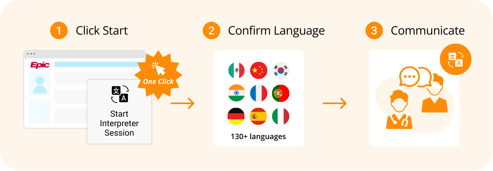
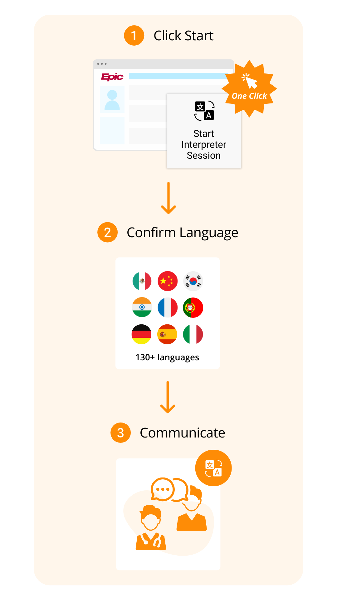
Communication starts when care starts
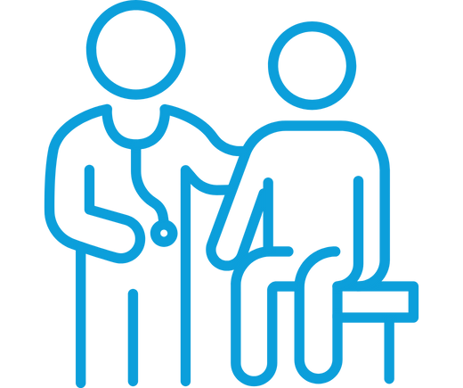
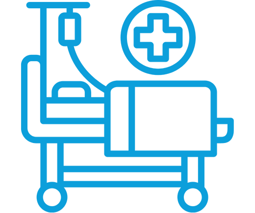
No scheduling
No wait
No session minimums
Care doesn't always happen at a workstation. Deliver immediate, real-time AI interpreter access on any device
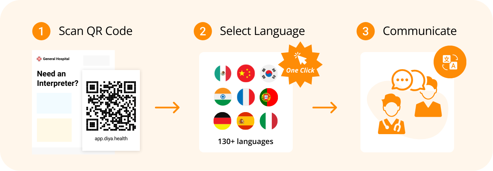
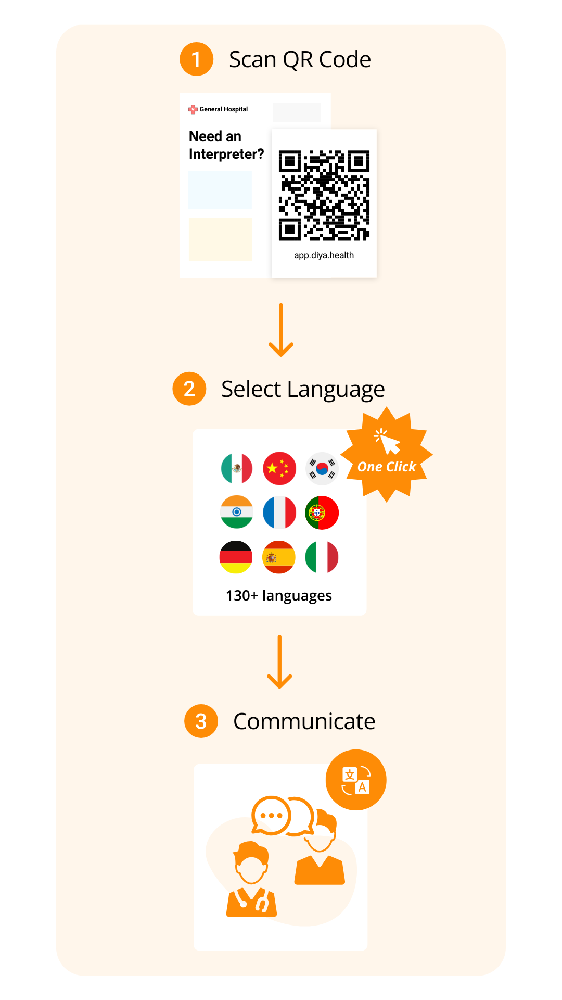
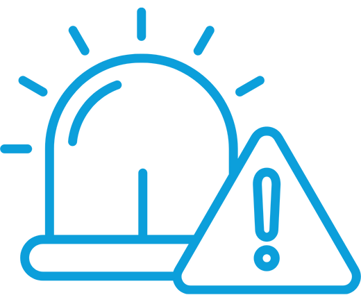
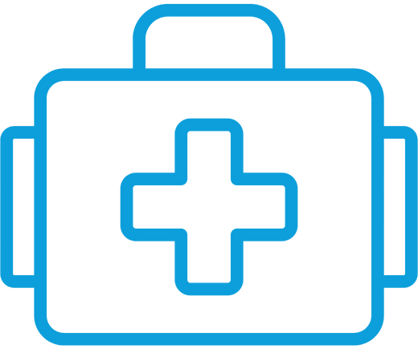
Designed for how healthcare actually operates

EHR-embedded
One-click access in Epic & other major EHRs
Always available
24/7 access across departments
Works on existing devices
Standard workstations, tablets, & phones
Healthcare-grade
Enterprise AI governance & security

Clinicians focus on care. Patients understand what's happening
When Diya is deployed, the impact of integrated language interpreter support is immediately visible
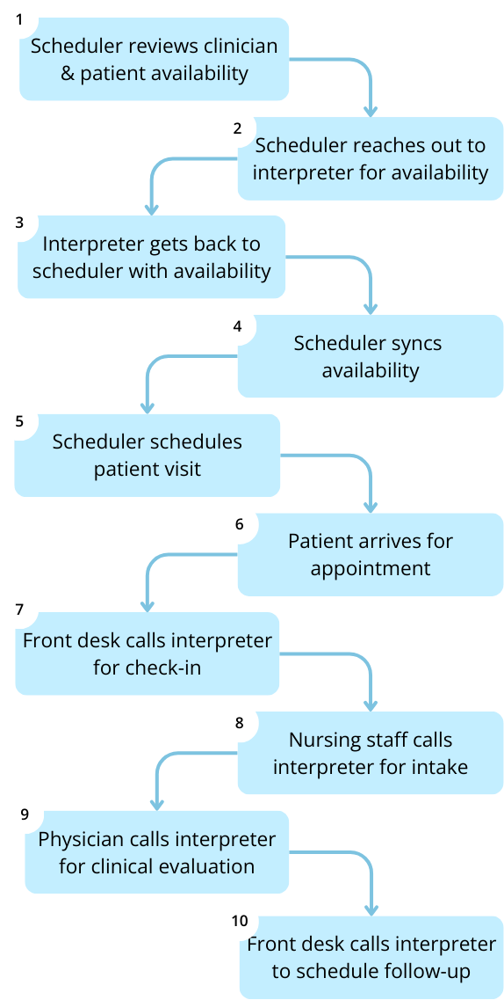
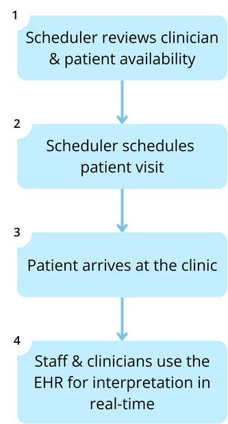

95%
4.5/5
1/3
Communication doesn't end when the encounter ends
Diya supports:
Post-visit clarification
Discharge conversations
Follow-up instructions
Care coordination across teams
Less confusion. Fewer callbacks. Reduced rework
Whether inside or outside the EHR, every interpreted interaction runs through Diya Safe AI™
AI medical interpreter workflows remain safe, governed, and auditable:
Audit trails & usage reporting
Clinical-risk monitoring
Language accuracy safeguards
Alignment with healthcare privacy & governance standards
Most health systems start with interpretation.
Then, expand naturally
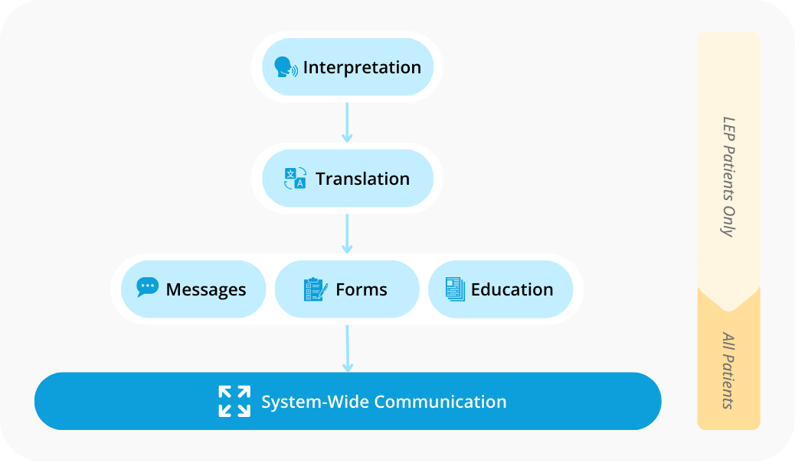
See interpretation in action
Explore how Diya ensures interpretation coverage wherever care happens